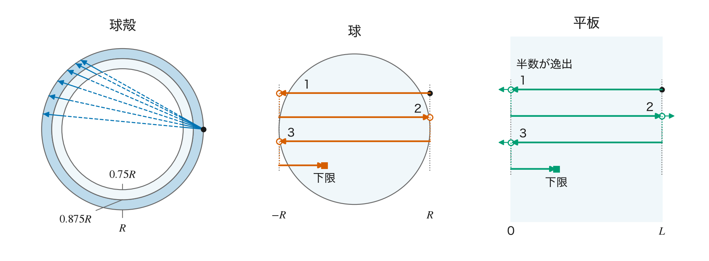
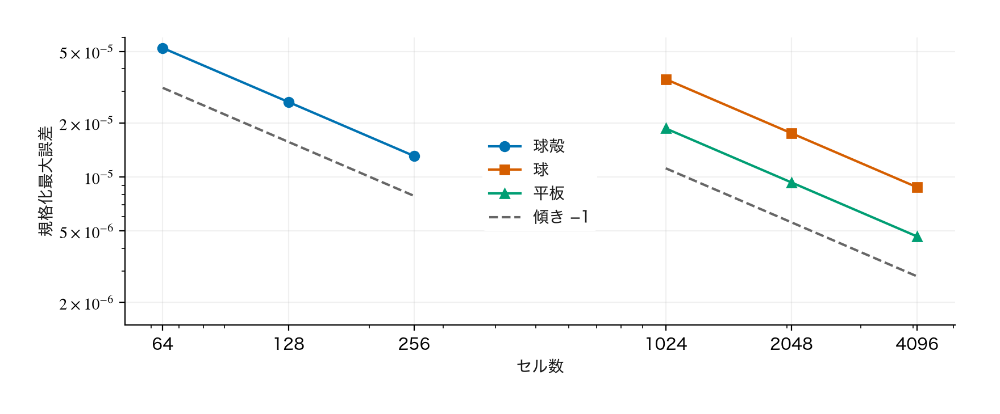

ホット電子の輸送の解析解による検証reference
要旨
ホット電子の輸送（hot-electron transport）を、球殻を貫く 6 本の弦上での減速、中心を含む球の直径上での繰り返し反射、平板の端面で一部が逸出する反射の 3 つの一次元問題で検証した。最細格子での規格化最大誤差はそれぞれ 1.31 × 10−5、8.76 × 10−6、4.66 × 10−6 である。観測収束次数（observed order of convergence）は 0.9994–1.0000 で、下限 0.9 を上回る。3 問題を通じて、エネルギー台帳（energy ledger）の規格化残差は最大 1.30 × 10−15 である。
はじめに
ホット電子の輸送は、プラズマを通る直線の弦（chord）に沿って計算する。衝突は運動エネルギーを減らし、散乱を含めると弦に沿って進む距離も短くなる。境界で反射した電子は領域に戻る。この過程を再流入（reflux）と呼ぶ。各問題では、媒質への付与、領域外への逸出、飛行中に残るエネルギーを、弦に沿った解析解から求めた値と比較する。
文献 [1, 2] の飛程積分（range integral）を出発点とする。試験では阻止能（stopping power）と散乱係数（scattering coefficient）を指定し、電子を進める格子に依存せずに輸送方程式を積分できるようにする。
計算の設定
3 問題とも密度 1 g/cm³ の炭素を使う。以下では、流体 1 時間刻みに相当する 1D ホット電子輸送カーネルの 1 回の実行を「呼び出し（call）」と呼ぶ。生成源は外端面から初期セル幅の 10−6 倍だけ内側に置く。生成源の軸は外端面に垂直な内向きで、外向き法線に対する方向余弦は −1 である。ホット電子温度 50 keV の三次元マクスウェル分布のうち、温度の 0.95–1.05 倍の範囲をひとつのエネルギー群（energy group）で表す。この範囲でエネルギーの二次モーメントを一次モーメントで割った代表エネルギー（representative energy）は約 50.02085 keV である。放出中の生成源のパワーは 260 erg/s とする（輸送方程式はパワーに線形であり誤差は注入エネルギーで規格化されるため絶対スケールは結果に影響せず、2 のべき乗を使うことで丸め誤差を避けている）。
| 問題 | 領域とプラズマ | 生成源と境界での挙動 | セル数 |
|---|---|---|---|
| 球殻 | 内半径は外半径の 0.75 倍。電子温度 300 eV、平均電離度 4。半径方向に等間隔の格子。 | 断熱追跡（adiabatic tracking）で 1 ns の呼び出しを 1 回行う。円錐の半頂角は 30° で、異なる弦は 6 本である。外端に達した電子はすべて逸出する。 | 64、128、256 |
| 球 | 中心から外端まで。電子温度 12.5 keV、平均電離度 6。半径方向の初期格子は等間隔。領域内部のセル面は初期位置から奇数回に初期セル幅の +0.3 倍、偶数回に −0.3 倍移す。両端点は固定する。毎回、密度を 1 g/cm³ に設定する。 | ひとつの直径上で時間依存追跡（time-dependent tracking）を行う。円錐の半頂角と反射時の偏向角は 0 で、境界は全反射する。呼び出し 1–12 回目に電子を放出し、13–20 回目は放出を止める。 | 1024、2048、4096 |
| 平板 | 固定した等間隔の平面格子。電子温度 12.5 keV、平均電離度 6。 | 両端面に垂直な 1 本の弦上で、球と同じ放出期間と時間依存追跡を用いる。両端面をシース境界（sheath boundary）とし、到達するたびに電子の半数が逸出し、残り半数は偏向なしに反射する。 | 1024、2048、4096 |
球殻では、電子のエネルギーが同じなら、外半径の 0.875–1 倍を占める外側半分の質量阻止能は内側半分の 2 倍である。円錐内の数値積分点に対応する 6 方向の衝突径数（impact parameter）は外半径の半分未満であり、弦は中心側の空洞を通過する。空洞内でのエネルギー付与はない。球と平板の係数は一様である。球の直径と平板の幅は、いずれも熱化の下限（thermalization floor）に達するまでの弦に沿った距離の 1/3.3 である。

解析解
輸送方程式は、衝突に対する質量柱密度（collisional mass column）と弦に沿う質量柱密度（chord mass column）を関係づける。
$$\begin{aligned} \mathrm{d}\Sigma &= -\frac{\mathrm{d}E}{S}, & \mathrm{d}l &= -\kappa_1\,\mathrm{d}\Sigma,\\ \mathrm{d}\Psi &= e^l\,\mathrm{d}\Sigma = \rho\,\mathrm{d}s, & \mathrm{d}t &= \frac{\mathrm{d}\Sigma}{\rho v}. \end{aligned}$$\(E\) は運動エネルギー、\(S\) は正で定義した質量阻止能（mass stopping power）、\(\Sigma\) は衝突に対する質量柱密度、\(\kappa_1\) は単位質量柱密度当たりの散乱係数である。\(l=\ln\langle\cos\theta\rangle\) は平均方向余弦の自然対数であり、\(\theta\) は弦の向きに対する散乱角である。\(\Psi\) は弦に沿う質量柱密度、\(s\) は弦に沿って進んだ距離、\(\rho\) は媒質の質量密度、\(t\) は飛行時間、\(v\) は電子の速さ、\(e\) は自然対数の底である。
数値計算では、弦に沿う各副刻み（ステップ）の始点で評価した質量阻止能、散乱係数、速さを使って電子を進める。試験専用の transport_1d::set_coefficient_table で係数の表を与える。エネルギーの自然対数に対し表の点を 1/64 間隔に置き、その対数に対して線形補間する。これらの格子では各副刻みはセル面で終わるが、呼び出しの残り時間を使い切る場合や熱化（thermalization）する場合はセル内部で輸送を終える。副刻み内で熱化の下限に達した場合、下限までの飛行時間はシンプソン則（Simpson's rule）で計算し直す。
(A) エネルギー依存の阻止能、散乱なし
Atzeni ら [1, §3.2, 式 (25)] は、連続減速近似（continuous slowing-down approximation）の飛程を、質量阻止能の逆数のエネルギー積分として表した。球殻の試験で指定した阻止能にこの積分を適用すると、指数積分による閉じた形になる。解の引数にはセルごとの阻止能の倍率で重み付けした質量柱密度を使う。
$$\begin{aligned} S &= s_c S_r[1-b\ln(E/E_0)], & \kappa_1 &= 0,\quad l=0,\\ \widehat\Psi &= \int s_c\,\mathrm{d}\Psi, & w &= 1-b\ln(E/E_0),\\ \Psi_A(E) &= \frac{E_0 e^{1/b}}{b S_r} \left[E_1(1/b)-E_1(w/b)\right], & \widehat\Psi &= \Psi_A(E). \end{aligned}$$\(S\) は質量阻止能、\(s_c\) はセルごとの倍率（半径方向の外側半分では 2、内側半分では 1）、\(S_r\) は基準の質量阻止能（1 MeV cm²/g）、\(b\) は無次元の係数 1/2 である。\(E\) は運動エネルギー、初期値 \(E_0\) は生成源のエネルギー群の代表エネルギーである。散乱係数 \(\kappa_1\) と平均方向余弦の対数 \(l\) は 0 である。\(\Psi\) は弦に沿う質量柱密度、\(\widehat\Psi\) は倍率で重み付けした質量柱密度である。\(w\) は無次元の補助変数、\(e\) は自然対数の底、\(E_1\) は指数積分（exponential integral）、\(\Psi_A(E)\) はエネルギー \(E\) に対応する重み付き質量柱密度である。セルの倍率がすべて 1 の弦では、2 つの質量柱密度が一致する。
球殻の外半径は次式で定める。重み付き質量柱密度が最大の弦でも、指定した密度で中心から外端までを満たしたときの質量柱密度の 0.91 倍以下である。したがって、電子が逸出するときの運動エネルギーは初期値の半分より大きい。参照計算は、エネルギーの区間幅が初期値の 10−12 倍以下になるまで二分法（bisection）で飛程の式を反転する。
$$\rho R = 0.4\,\Psi_A(E_0/2).$$\(\rho\) は質量密度、\(R\) は外半径、\(\Psi_A\) は重み付き質量柱密度を与える関数、\(E_0\) は初期エネルギーである。
球殻内では、局所の半径方向に対する弦の方向余弦の絶対値は 0.745 以上であり、阻止能は \(2.70 S_r\) 未満にとどまる。セル数 \(N\) のとき、弦がひとつのセルを通過する区間の重み付け前の質量柱密度は最大 \(0.067 E_0/(S_r N)\) である。最粗格子（64 セル）でもこの値は上限 \(1.86\times10^{-3} E_0/S_r\) を下回り、1 副刻みのエネルギー損失目標（2%）よりも先にセル面が各副刻みの長さを制限する。これにより副刻み長が格子幅だけで決まるため、収束の節で格子幅に対する 1 次収束を純粋に検証できる。
(B) 阻止能と散乱係数が一定
Solodov と Betti [2, 式 (15)] は、散乱率を経路に沿って積分し、負号を付けた値を指数として平均方向余弦を表した。同論文の式 (23) では、減速にともなう距離をこの方向余弦で重み付けして積分し、弦の向きに射影した飛程を求める。試験では、積分の終点として同論文が挙げた条件のうち、平均方向余弦が \(e^{-1}\)（\(e\) は自然対数の底）に達する点を用いる。質量阻止能と散乱係数が一定なら、エネルギーと平均方向余弦は弦に沿う質量柱密度の陽な関数になる。
$$\begin{aligned} E_B(\Psi) &= E_0 + \frac{S_r}{K}\ln(1-K\Psi), & \langle\cos\theta\rangle &= 1-K\Psi,\\ E_{\rm floor} &= \max(2T_e,10^{-3}T_h), & K &= \frac{S_r}{E_0-E_{\rm floor}},\qquad \Psi_f = \frac{1-e^{-1}}{K}. \end{aligned}$$\(E_B(\Psi)\) は弦に沿う質量柱密度 \(\Psi\) での運動エネルギー、\(E_0\) は初期エネルギー、\(S_r\) は一定の質量阻止能（1 MeV cm²/g）である。\(K\) は質量柱密度に対する散乱係数 \(\kappa_1\) の一定値、\(\langle\cos\theta\rangle\) は散乱角 \(\theta\) の平均方向余弦である。電子温度 \(T_e\) とホット電子温度 \(T_h\) はエネルギーの単位で表す。時間依存の 2 問題での熱化の下限 \(E_{\rm floor}\) は 25 keV である。下限に対応する質量柱密度 \(\Psi_f\) で平均方向余弦は \(e^{-1}\) に達する。\(e\) は自然対数の底である。下限に達したセルへ残りのエネルギーを付与する。

一様な密度と一定の阻止能の下では、速さの逆数を積分すると飛行時間が求まる。各呼び出しの終了時のエネルギーは、この関係を無次元運動量について解いて求める。
$$\begin{aligned} t_B(E) &= \frac{m_e c}{\rho S_r}[q(E_0)-q(E)],\\ q(E) &= \sqrt{\gamma^2-1},\qquad \gamma=1+\frac{E}{m_e c^2}. \end{aligned}$$\(t_B(E)\) は放出からエネルギー \(E\) に達するまでの時間、\(E_0\) は初期エネルギー、\(m_e\) は電子の静止質量、\(c\) は光速、\(\rho\) は質量密度、\(S_r\) は一定の質量阻止能である。\(q(E)\) は \(m_e c\) を単位とした運動量、\(\gamma\) はローレンツ因子である。
参照計算では、反射ごとに経路を展開し、質量柱密度が増え続けるひとつの直線上で計算する。1 回の通過距離は球では直径、平板では幅である。初回の通過距離は、放出点を端面から内側に置いた分だけ短い。境界への到達位置と 1 回の呼び出しの時間幅は次式で定まる。
$$\rho D = \Psi_f/3.3,\qquad \Psi_k=\rho(kD-\delta),\qquad \Delta t = t_B(E_{\rm floor})/7.5.$$\(\rho\) は質量密度、\(D\) は端から端までの通過距離、\(\Psi_f\) は熱化の下限に対応する質量柱密度、\(\Psi_k\) は \(k\) 回目（1–3）の到達点の質量柱密度、\(\delta\) は放出点の端面から内側へのずれである。\(\Delta t\) は呼び出し 1 回の時間幅（約 0.31035 ps）、\(t_B(E_{\rm floor})\) は熱化の下限 \(E_{\rm floor}\) までの飛行時間である。設定の解析解では、放出から呼び出し約 1.419、3.337、6.248 回分（\(\Delta t\) の倍数）の時刻に境界へ達し、いずれの到達点でもその呼び出しの残り時間は少なくとも 0.24 回分ある。放出から 7.5 回分の時間が経つと 4 回目の通過の途中で下限に達する（球では半径の約 0.4 倍、平板では内端面から幅の 0.3 倍に放出点のずれを加えた位置）。試験本体が照合するのは各呼び出し終了時のエネルギー量である。
セル数 \(N\) のとき、弦がひとつのセルを通過する区間の質量柱密度は、面を移動する球で最大 \(0.2\Psi_f/N\)、平板で \(\Psi_f/(3.3N)\) である。下限に達する位置と最寄りのセル面との距離は、初期セル幅を単位として、球で 0.0999 以上、平板で 0.1999 以上である。
比べる量と判定
球殻での弦の各区間の付与エネルギーは、解析解による運動エネルギーの減少に、その弦に割り当てた電子数を掛けて求める。逸出エネルギーは、外端で残った運動エネルギーを弦ごとの電子数で重み付けして足す。電子数の割り当てには、試験と同じ角度積分の重みを用いる。
球と平板では、放出した回も含め、各呼び出し終了時までの経過時間から放出回ごとに参照値を求める。\(m\) 回目に放出した電子の \(n\) 回目の終了時での経過時間は \((n-m+1)\Delta t\) である。\(\Delta t\) は呼び出し 1 回の時間幅である。付与エネルギーは、その呼び出し中に展開した経路に沿って進んだ区間でのエネルギー損失である。球で反射するとき電子数は変わらず、平板では境界に達するたびに半分になる。平板で逸出した半数が運び去るエネルギーは累積逸出エネルギーに足す。残った電子数と運動エネルギーの積は、飛行中のエネルギーへの寄与である。
粗密格子間や球の移動格子でも同一の物理位置を基準に比較するため、最粗格子の各面に対応する面より外側の全セルについて、その呼び出しでの付与エネルギーの総和（累積付与）を解析値と照合する。細かい格子では 2 面または 4 面おきに対応する面を取り、球での移動を含めたその回の面位置で参照値を求める。球殻では総逸出エネルギーも比べる。球と平板では各回の終了時に飛行中のエネルギーも比べ、平板では累積逸出エネルギーも比べる。格子ごとの誤差は、比較量、面、呼び出しにわたる差の絶対値の最大を、放出する 1 回の注入エネルギーで割った値である。
隣接する格子の両組で観測収束次数が 0.9 以上でなければならない。また、各呼び出しでエネルギー台帳の上限と、問題ごとに厳密なゼロを求める条件を満たす必要がある。
結果
2026 年 11 月 24 日に NVIDIA RTX PRO 6000 Blackwell Max-Q Workstation Edition GPU 1 枚で実行した 3 問題は、すべて判定基準を満たした。実行条件と出力の記録はリポジトリの tools/site_figures/ にある。
| 問題 | 粗 | 中間 | 細 | 粗 → 中間 | 中間 → 細 |
|---|---|---|---|---|---|
| 球殻 | 5.22937 × 10−5 | 2.61570 × 10−5 | 1.30811 × 10−5 | 0.999437 | 0.999718 |
| 球 | 3.50505 × 10−5 | 1.75265 × 10−5 | 8.76353 × 10−6 | 0.999899 | 0.999950 |
| 平板 | 1.86394 × 10−5 | 9.32351 × 10−6 | 4.66236 × 10−6 | 0.999412 | 0.999813 |
収束
格子を細かくするたびにセル数を倍にし、3 格子の誤差から観測収束次数を求める [3, 式 (5.23)]。誤差は解析解との差から計算する。
$$p_{01}=\log_2(e_0/e_1),\qquad p_{12}=\log_2(e_1/e_2),\qquad e_1=e_2\,2^{p_{12}},\quad e_0=e_1\,2^{p_{01}}.$$\(e_0,e_1,e_2\) は粗・中間・細格子の規格化最大誤差である。\(p_{01}\) と \(p_{12}\) はそれぞれ粗・中間と中間・細の格子の組の観測収束次数、\(\log_2\) は底が 2 の対数である。末尾の 2 式は、出力された最細格子の誤差と次数から残りの格子の誤差を求める関係である。
解析解の節で述べたように、これらの格子ではセルの大きさが副刻み長を制限する。球殻では、エネルギーに依存する阻止能を始点で評価するため、格子幅に対して 1 次の収束が見込まれる。解 (B) では阻止能と散乱係数が一定であるため、熱化に至るまでの副刻みでは、質量柱密度に対するエネルギーと平均方向余弦を厳密に積分する。速さを始点の値に固定するため、飛行時間に 1 次の誤差が生じ、呼び出し終了時の状態に影響する。表 2 の 6 個の観測収束次数はすべて下限を上回る。

エネルギーの保存
エネルギー台帳は、各呼び出しで注入したエネルギーとそれまでに蓄えたエネルギーの和を、付与、逸出、未解決、飛行中に残ったエネルギーの和と比べる。
$$\epsilon_{\rm ledger} = \frac{\left| E_{\rm inj}+U_{\rm before} -(E_{\rm dep}+E_{\rm esc}+E_{\rm unres}+U_{\rm after})\right|}{E_*}.$$\(\epsilon_{\rm ledger}\) は規格化残差である。その回の注入エネルギー \(E_{\rm inj}\) は、放出しない回には 0 である。\(U_{\rm before}\) と \(U_{\rm after}\) は呼び出し前後の飛行中のエネルギーである。\(E_{\rm dep}\)、\(E_{\rm esc}\)、\(E_{\rm unres}\) はその回の付与、逸出、未解決エネルギー（unresolved energy）である。\(E_*\) は規格化に使う、放出する 1 回分の注入エネルギーである。
| 問題 | 最大残差 | 許容上限 | 厳密なゼロ |
|---|---|---|---|
| 球殻 | 4.13590 × 10−16 | 4 × 10−7 | 未解決エネルギーと、副刻み数の上限に達した回数。 |
| 球 | 1.30143 × 10−15 | 4 × 10−8 | 各回の逸出・未解決エネルギー。19、20 回目の終了時に残っている履歴の行数と飛行中のエネルギー。 |
| 平板 | 6.50717 × 10−16 | 7 × 10−8 | 各回の未解決エネルギー。19、20 回目の終了時に残っている履歴の行数と飛行中のエネルギー。 |
限界
比較の対象は、質量阻止能と散乱係数を指定した輸送である。これらの係数をプラズマの状態から与える式は別の試験で検証する。どの問題も 1 エネルギー群を使い、弦の本数は 1 本または 6 本である。球での格子の移動は指定値で与え、流体との結合は含めない。
試験の実行
試験のソースは tests/laser/ である。CUDA デバイスが使える環境のビルドディレクトリで次を実行する。
./test_hot_electron_1d_transport_problems "HTA16*"
./test_hot_electron_1d_transport_problems "HTA26*"
./test_hot_electron_1d_transport_problems "HTA27*"Catch2 の試験名フィルター "HTA16*"、"HTA26*"、"HTA27*" は、それぞれ球殻、球、平板の標準問題を選ぶ。記録した実行ではそれぞれ 11、202、134 個の検査に合格した。球の試験は輸送の比較に先立ち、8 個の既定値 — エネルギー群数 50、飛程短縮（range shortening）有効、時間依存追跡、履歴容量 224 行、最古の集団を再利用、シースでの偏向角 5°、シースからの逸出割合 0、未解決エネルギーの上限 10−3 — も照合する。
参考文献
- S. Atzeni, A. Schiavi, and J. R. Davies, "Stopping and scattering of relativistic electron beams in dense plasmas and requirements for fast ignition," Plasma Phys. Control. Fusion 51, 015016 (2009). doi:10.1088/0741-3335/51/1/015016
- A. A. Solodov and R. Betti, "Stopping power and range of energetic electrons in dense plasmas of fast-ignition fusion targets," Phys. Plasmas 15, 042707 (2008). doi:10.1063/1.2903890
- W. L. Oberkampf and C. J. Roy, Verification and Validation in Scientific Computing (Cambridge University Press, 2010). doi:10.1017/CBO9780511760396